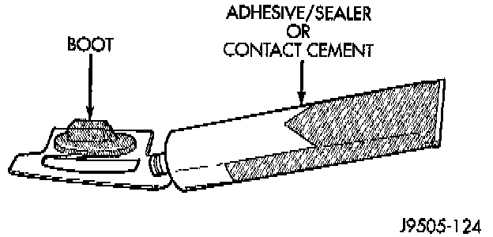
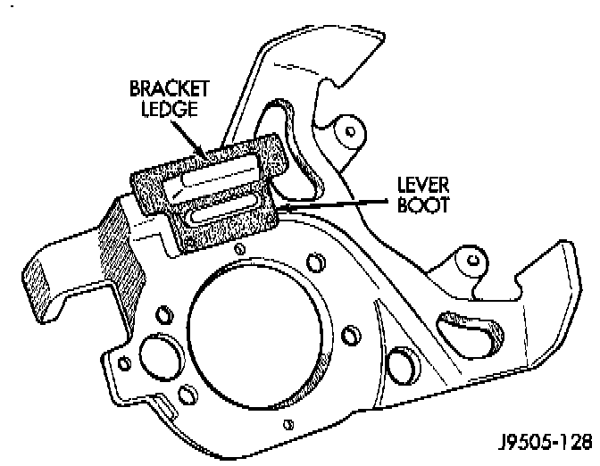
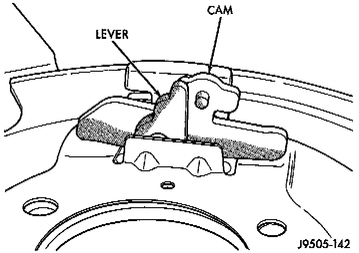
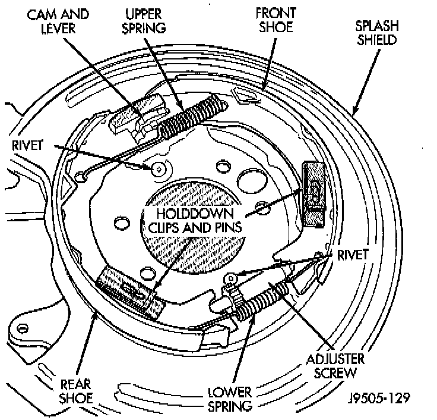
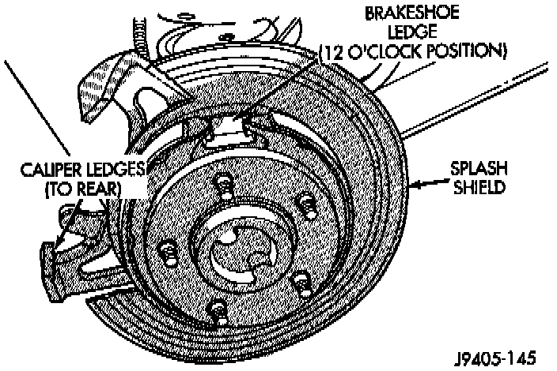

Installation
1. If original bracket and shield will be reused, clean them with Mopar carb and brake cleaner. Also clean shoe contact pad surfaces of shield with 400 grit paper. Lubricate pad surfaces with light coat of Mopar multi-mileage grease.
2. Apply thin coat of contact cement or silicone adhesive to new lever boot and to boot mounting area of caliper bracket. Apply adhesive to areas where boot and bracket contact one another. Adhesive is needed to hold boot in position when splash shield is attached to bracket.

3. Install new boot on caliper bracket. Metal retainer part of boot fits over ledge on caliper as shown. Rubber part of boot extends through rear opening in bracket. Allow adhesive on boot and bracket to set up for a minute or two before proceeding.
CAUTION: If the boot is not installed properly, it will prevent the shield from seating squarely on the bracket. This will cock the shield causing it to rub against the rotor after installation.
4. Position splash shield on caliper bracket. Then carefully install shield and bracket assembly on axle tube flange studs.
5. Apply Mopar Lock N' Seal (or Loctite 242), to axle tube stud nuts. Then install and tighten nuts to 43-61 Nm (32-45 ft. lbs.).

6. Assemble and install cam and lever. Push lever through boot and seat cam between lip on shield and ledge on bracket. Then engage lever in cable eyelet. Be sure cable notch in lever is facing rearward. Remove and reposition cam and lever if necessary.

7. Install parking brake shoes on splash shield. Verify positioning of cam and lever, shoes, springs and hold-down clips and pins.

8. Verify correct positioning of caliper bracket and shield. Caliper opening and ledges should be to rear as shown.
9. Install axle shaft, shaft retainer clips and housing cover. Check lube level and add lubricant if needed.
10. Install rotor, caliper, and wheel and tire assembly. Then adjust parking brake shoes. Adjustments
11. Lower vehicle and verify correct service and parking brake operation.